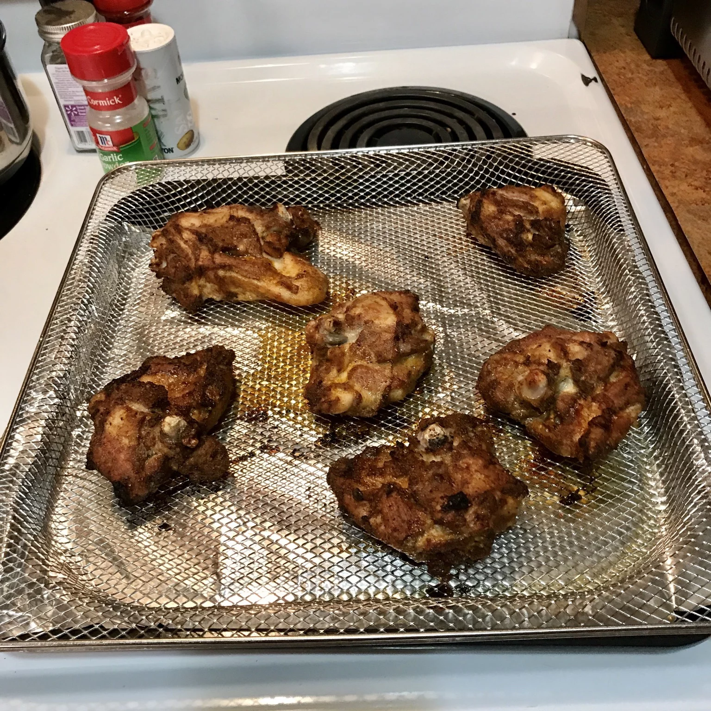

Air Fryer Chicken Thighs
Air Fryer Chicken Thighs
Bird is the word, and although turkey might controll one day a year, everyone knows chicken is in charge for the other 364 days. In my opinion, the absolute best part of yard bird if the thigh.
At half the cost of breast with more flavor, juice and forgiveness for overcooking, chicken thighs are my favorite by far.
Of corse fried chicken thighs are amazing, but they are not always good for your health, and grilling isn't always an option. A good method for cooking them is with the versitle air fryer!
Ingredients (Serves 4)
- 4 skin-on, boneless chicken thighs
- 2 tsp olive oil
- 1 tsp smoked paprika
- 3/4 tsp garlic powder
- 1/2 tso salt
- 1/2 tsp ground black pepper
Steps
- Preheat an air fryer to 400 degrees F (200 degrees C).
- Pat chicken thighs dry with a paper towel and brush the skin-side of each piece with olive oil. Place chicken thighs, skin-side down, in a single layer on a plate.
- Combine smoked paprika, garlic powder, salt, and pepper in a bowl and sprinkle half the seasoning mixture evenly over the 4 chicken thighs.
Turn thighs over and evenly sprinkle remaining seasoning mixture on top. Place chicken thighs in the air fryer basket in a single layer, skin-side up.
- Fry in the preheated air fryer until chicken is brown and juices run clear, about 18 minutes. An instant-read thermometer inserted into the center should read at least 165 degrees F (74 degrees C).